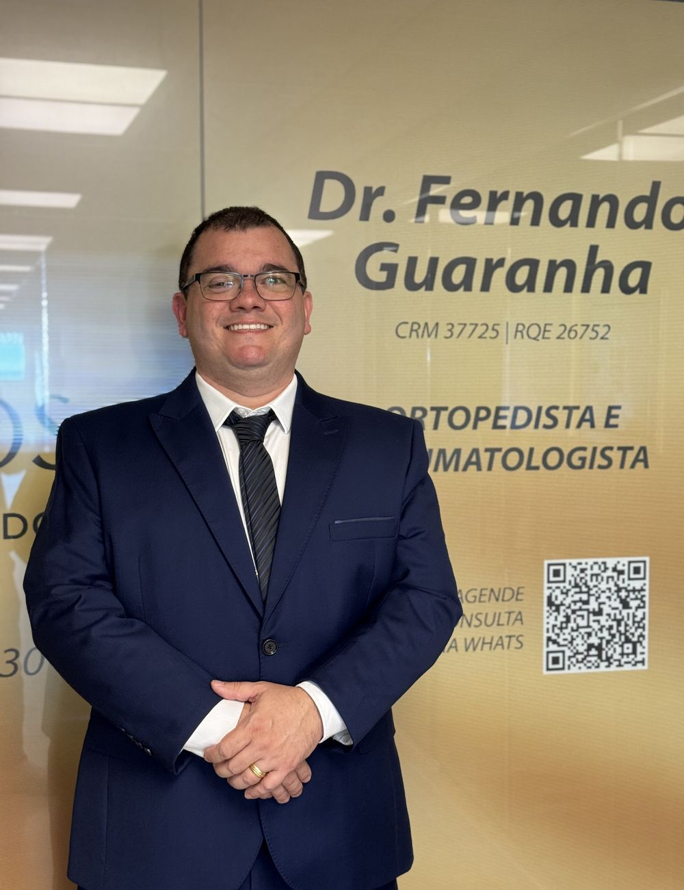
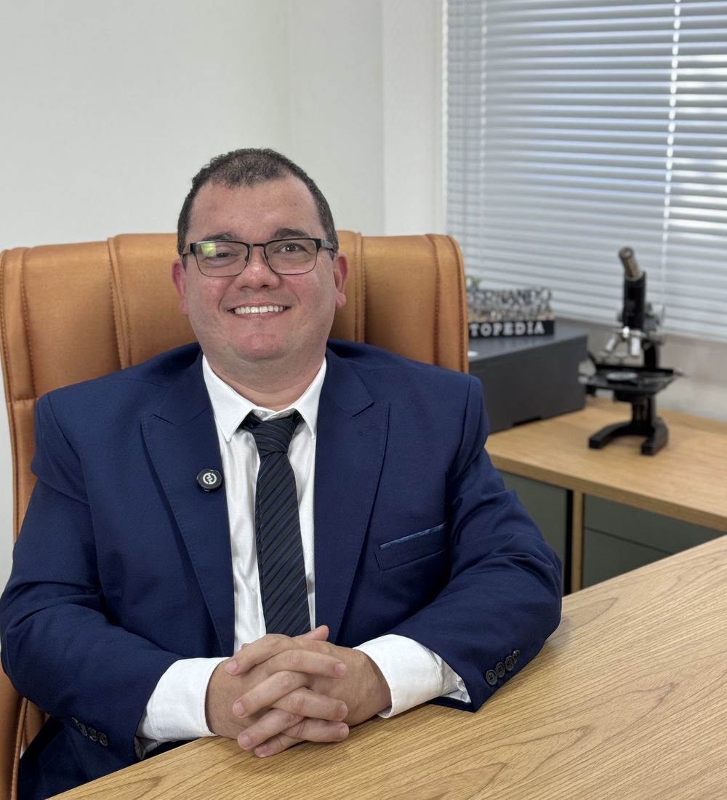

O médico
Dr. FernandoGuaranha
Ortopedista e traumatologista em Cascavel e fundador da Arthros · Centro Avançado de Dor. Meu trabalho é encontrar de onde a dor vem e tratar a causa, com tempo para escutar e um plano que respeita o seu ritmo.


Muita gente chega achando que dor é coisa da idade e que vai ter que conviver com ela. Na maioria das vezes, dá para fazer muito mais.
Sou ortopedista e traumatologista e fundei a Arthros, em Cascavel, para cuidar de quem sente dor com tempo para escutar, diagnóstico preciso e um plano que respeita o seu ritmo.
No consultório, uso o ultrassom para enxergar tendões, bursas e articulações em movimento, durante a própria consulta. Quando um procedimento é indicado, ele é guiado por imagem, com anestesia local e volta para casa no mesmo dia.
Atendo pacientes de Cascavel e de toda a região oeste do Paraná, com atenção especial a quem convive com dor no ombro, no cotovelo, no joelho e na coluna.
- Especialidade
- Ortopedia e Traumatologia
- Registro
- CRM/PR 37.725 · RQE 26.752
- Foco
- Tratamento da dor · ombro e cotovelo
- Atende em
- Arthros · Dom Medical Center, sala 609
Cada ciclouma camada de formação
Uma árvore guarda a própria história em ciclos de crescimento. Toque em cada um para ver uma etapa da formação.
Quatro compromissoscom quem sente dor
A história da dor diz muito sobre a causa. A consulta tem o tempo que ela precisa.
Você sai entendendo o que tem, o que vamos fazer e por quê.
Aliviar é importante. Mas o tratamento só termina quando a origem é cuidada.
O plano se adapta à sua rotina, ao seu trabalho e ao seu momento.
A dor é o que aparece na superfície. Ela avisa, mas quase nunca explica. Enquanto só ela for tratada, ela volta. Por isso o meu trabalho começa embaixo dela, na causa.
Da raiz ao movimento
Três etapas, na ordem em que uma árvore se firma: primeiro a raiz, depois o tronco, depois a copa.
Entender
Conversa sem pressa, exame físico e ultrassom no consultório quando ajuda. Saber de onde a dor vem é a parte mais importante do tratamento.
Aliviar
Medicação certa e, se indicado, infiltração ou bloqueio guiado por imagem, feitos no consultório e com volta para casa no mesmo dia.
Movimentar
Com a dor sob controle, a reabilitação e o fortalecimento acontecem de verdade. Os retornos ajustam o plano até a rotina voltar.

Do grego arthron, articulação
O símbolo da clínica é uma árvore porque é assim que eu enxergo o tratamento: raiz firme primeiro, movimento depois. A Arthros é um centro dedicado a quem sente dor, no Dom Medical Center, no Centro de Cascavel.
- Endereço
- R. Visconde de Guarapuava, 1717 · sala 609
- @arthroscentrodedor